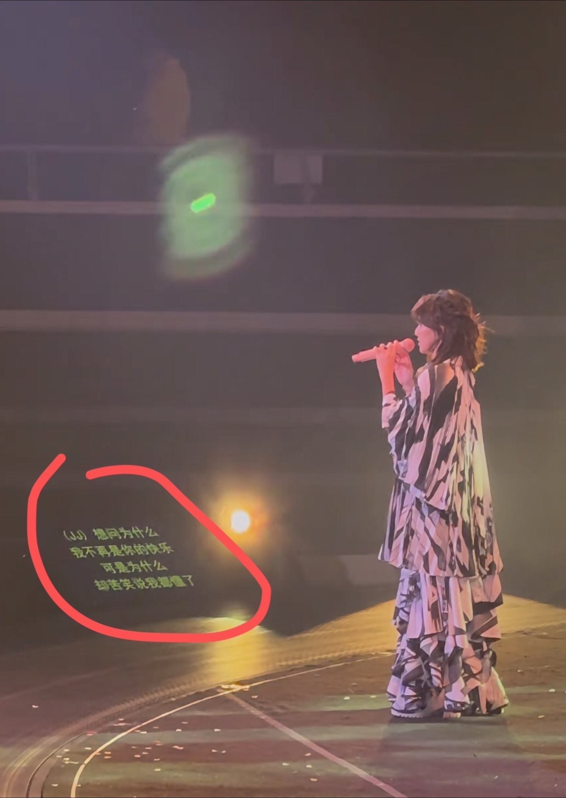
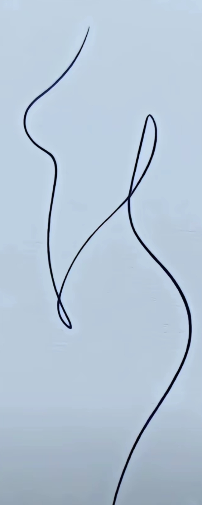

125年的拜仁历史 他就呆了25年 占据了五分之一的历史。我还记得他是小将穆勒啊。
怎么这么像听说你[看]
音乐生们不管是学什么的，对敕勒歌都很执着[比心]
就是这感觉
敕勒歌是声乐生的甄嬛传[看]
提琴小姐姐拉的副旋律太好听了！！！有她的dy嘛
音乐生对《青玉案》《敕勒歌》《爱永在》《越人歌》始终还是有着莫名的执着[看]
每次刷到敕勒歌 我都会停下来吃会草[思考]
敕勒歌确实影响刷抖音速度[微笑]
你说敕勒歌这玩意谁研究的呢
我以为黄衣小姐姐是在旁边听歌的，结果舞台不养闲人[尬笑]
不是音乐生刷到敕勒歌都自动停下[流泪]
还有越人歌 音乐生的减速带[黑脸]
一个敕勒歌一个爱永在，不知道为啥，就喜欢这俩玩意[看]
都闪开，给我一个气口我来唱[黑脸]“敕勒川，阴山下”[黑脸]
这曲调真的太异世界了，有一种勇者小队刚结束了一场冒险，来到镇上的酒馆和其他冒险队伍分享着路上见闻，酒足饭饱后，队伍里的精灵吟游诗人开始了歌唱，大家在那载歌载舞[憨笑]
第一次看夏空：这什么玩意 第二次看夏空：唉有点意思唉 第三次看夏空：哈啊哈啊哒哒拉哒哒～ 第四次看夏空：他们朝我扔哒哒我拿哒哒做蛋挞
昨天吃了一天的黄瓜，凌晨3点起床煮了20个饺子[九转大肠]
周末到河北，只有大风听进去了
他其实比大多数人都更有原则和底线，只是选择了善良和宽容，很有力量
挺好看的一女孩，要是哑巴就好了
我最近每天都点3杯奶茶，一杯自己喝，一杯敬我东哥，另一杯倒地上给王兴[黑脸]
张老师还是委婉了[捂脸]，甩给他一句放纵吃的几年东西，你还想几个月就减下去？
林俊杰：没抢到你的票怎么办？唉？门没锁？

一个想拥抱，一个想牵手，最后却变成锁喉[九转大肠]
臭小子，来了也不说一声[泣不成声][泣不成声]
他俩在拥抱和握手之间选择了锁喉[看]
林俊杰：提词器出卖了我[泪奔] 
我在抖音就没在过那么差的位置[一头乱麻]
要是我偷偷上场 她会不会也这么惊讶[尬笑]
哥真好 为了不喧宾夺主 自己专用的圣剑都没拿
JJ：没买到票啊，门把手也没带，算了，抢和声老师的麦上去唱一会
冷门歌手演唱会现场锁喉嘉宾[看]
连续唱了好几首歌，孙燕姿本人并不知情，在《我怀念的》第三段主歌的时候突然看见提词器出现了JJ[呲牙][呲牙][呲牙]
难怪JJ 澳洲开完演唱会就急忙忙的走了[捂脸][捂脸]
确实没采排过，林的话筒声音小了点[思考]
我姿的发声还有唱腔变了 感觉更厚更稳了
求求了 深圳站也是JJ嘉宾[泣不成声][泣不成声]
JJ竟然没带自己的圣剑来 [看]
为什么JJ上台呢，因为台下
“让我们欢迎特别来宾：蔡依林 [流泪]
如果是提前定好的话 应该用的是门把手麦🤣
青春是 一首林俊杰一首孙燕姿
哥总是制造惊喜[流泪]
不是，jj出来偷感真的好重啊[泪奔]
播主你下次能不能努力点带我坐第一排
林俊杰去了 都没座 只能上台唱
人家孙燕姿开演唱会，你又唱又跳的[看]
皮一下 图片是刷好多视频截图的
这就是传说中的坡花和坡草嘛[看]
本来是相当观众的 结果来嘉宾了 因为“没座”
猜这啥字[疑问] 
想做屏保，怎么把上面的字去掉
献丑了[看]
昨晚我哭了，一个人坐了很久很久，想了很多事情，低下头，眼泪就掉了下来，突然发现，我这一辈子好难好难。这一辈子一事无成。也没有很爱我的人，我的心一下子就空了，原来我这么孤独，茫茫人海终究只有我自己， 就一瞬间，所有的心酸涌上心头，心一下就空了，也没有想说的，就是心里堵的慌，最无助的时候，才发现自己什么都没有，就想这么坐着，自己都不知道自己在想什么，突然感觉人生没什么意思，我该用什么样的语言，来表达我现在乱七八糟的心情呢，生活的琐碎，吐出来矫情，咽下去辣嗓子，百般委屈涌上心头，到嘴边又觉得不值一提，生活就是这样，又难过又难说，成年人的世界，除了快乐是假的，其他的都是真的，一路走来跌跌撞撞，让我没有了以前的骄傲，也失去了原来的模样，也明白了大家经常说的那句越懂事的人越累，晚风吹人醒，万事藏于心吧，我知道曾经那个简单快乐的自己 再也回不去了， 洗了一个澡，换了一身衣服，出了门却不知道去哪儿，不知道去找谁，漫无目的走着，大概这就是成年人最深的孤独吧， 旧人不知我近况，新人不知我过往，近况不该旧人知，过往不与新人讲，也许这就是人生吧……[泣不成声][快哭了][快哭了][快哭了][抱抱你][抱抱你]
[偷笑][偷笑]学得四不像
创意无限，美感十足[赞][赞]
看到等于躲过，一顺百顺顺顺[感谢][感谢][感谢]
都暻秀是韩国爱豆中极少数的R&B唱腔主唱，他有低沉磁性声音与收放自如的控音能力~k-pop音乐的唱法比较普通，但都暻秀一张嘴就能够把k-pop变成R＆B
当时看到这张瞬间getD.O.先生的帅[舔屏][舔屏][舔屏]
[听歌]一个嘟嘟一个伯贤，都有178的话那就完美了[看][捂脸][捂脸]
我刚想感叹都暻秀嗓子不出个人专辑可惜了，就发现他已经出到第三张专辑了。公司怎么做的宣传。
谁敢相信这首歌是两个人在唱，俞永镇你是不是手把手教的都暻秀，不然咋做到这么像的[愉快]
D.O.先生你为什么这么迷人[憨笑]明明刚出道爱上谁都没注意到你，偏偏你就像醇厚的红酒，越品越香，不自觉被你吸引
这首歌永远都听不腻
就喜欢你最后忽然瞬间猛地突然强力拔高政治站位[大笑][大笑][大笑][捂脸][捂脸][捂脸][捂脸][捂脸][捂脸]
内需是保障出来的，不是刺激出来的
WTO基本可以完结了
[尬笑]所以李嘉诚卖港口卖的正是时候
这话讲的很好，所谓的国力就是老百姓真正的购买力[赞][赞][赞]
国力就是购买力，消费力。精辟[赞][赞][赞]
说得好，我们正在见证雅尔塔体系的崩塌
明天让你们看看什么叫信心
500年后一样没人能打到斡难河。
朱祁镇：五百年来，留学到这的只有我了
如果再战～7080先上决不后退～[感谢][感谢][感谢]～致敬先烈
如果有战让我们70后先上，反正都要死，留着年轻人后上，让他们生娃，给我们留后人，给国家留后人。
Read more: